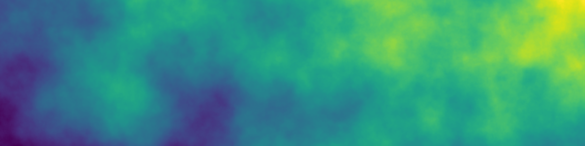

# Import libraries
import os
import sys
import subprocess
from pathlib import Path
# Find GRASS Python packages
sys.path.append(
subprocess.check_output(
["grass", "--config", "python_path"],
text=True
).strip()
)
# Import packages
import grass.script as gs
import grass.jupyter as gj
from grass.tools import Tools
# Initialize GRASS session
gs.create_project("fractal", overwrite=True)
gj.init("fractal")
tools = Tools()Getting started with GRASS using WSL
tutorial
grass
python
Get started with GRASS using WSL.
This is a very short introduction to using GRASS on Windows Subsystem for Linux. This is the recommended way to use GRASS as a Python library on Windows, because Python and GRASS are more seamlessly integrated with Unix-like operating systems.
Windows Terminal
You will use shell scripting with Bash in a terminal to set up GRASS in a Conda environment. We recommend using the new Windows Terminal which has been included in Windows 11 releases since 2022. If you have an older version of Windows 10 or 11, then install Windows Terminal from the Microsoft Store. With Windows Terminal you can open new tabs for different command line shells such as Powershell. Once you have installed Windows System for Linux, you will be be able to open an Ubuntu tab too.
NoteSetting up Windows Terminal
More more information, see the official guide to install and get started setting up Windows Terminal.
Windows Subsystem for Linux
With Windows Subsystem for Linux you can cleanly install the Linux build of GRASS in a Conda environment on Windows. With this build of GRASS you will be able to install hundreds of addon tools, have much faster multiprocessing, and easier scripting in Python. Let’s get started. Open the Windows start menu, type terminal, and right click on Terminal’s icon to run as an administrator. By default Terminal will open a PowerShell tab. Run the following command in this administrator’s PowerShell tab to install Windows Subsystem for Linux and Ubuntu. Once the installation is complete, restart your computer.
wsl --install
NoteSetting up WSL
More more information, see the official guide to set up a WSL development environment.
Ubuntu
After you have restarted your computer, open an Ubuntu shell in Windows Terminal. To do this, you can search for Terminal via the Windows start menu and then select Ubuntu as your shell. If you already have Terminal open, click on the dropdown menu beside the top of the tab and pick Ubuntu to open that shell in a new tab. The hotkey for should be Ctrl + Shift + 3. In the dropdown menu, you can also find the settings tab where you can set Ubuntu as the default shell if desired. Once you open the Ubuntu shell for the first time, you will be prompted to enter a new username and password.
Python Distribution
Install Miniforge, a minimal Python distribution with Conda for package management and conda-forge as the default channel [1]. We recommend Miniforge because it is the easiest, cleanest way to install the GRASS Conda Package. In the Ubuntu shell, download and run the installation shell script. Answer yes when asked whether to initialize Conda. After installing Miniforge, run the source command so that your Ubuntu terminal finds the installation.
sudo apt-get install wget
wget https://github.com/conda-forge/miniforge/releases/latest/download/Miniforge3-Linux-x86_64.sh
bash Miniforge3-$(uname)-$(uname -m).sh
source ~/.bashrc
NoteDownloads
For Ubuntu distributions since 2025 wget has been replaced with wcurl.
Environment
Now that Conda is installed, let’s use it to create an environment for GRASS. We will install the GRASS, Jupyter Lab, and other useful Python packages with all of their dependencies into this environment. In a terminal, run conda create to create an environment named grass. Then use conda install to install the GRASS package. Next, run conda activate to start the environment.
conda create --name grass
conda activate grass
conda install grass jupyterlab requests folium ipyleaflet seabornYou can do this with just one line of code:
conda create -n grass grass jupyterlab requests folium ipyleaflet seaborn && conda activate grass
NoteOther Conda distributions
If you use a Conda distribution other than Miniforge, you will need to specify the conda-forge channel when creating the environment with -c conda-forge. You may also need to override your default channel settings with --override-channels to prevent conflicts.
Computational Notebook
Let’s try the newly installed GRASS Conda package in a Jupyter notebook. We will use scripting to generate and visualize fractal terrain. Let’s begin by launching Jupyter Lab from the terminal. This will open a new Jupyter notebook in a web browser window.
jupyter labStart GRASS
To start a GRASS session, we need to define a project and its coordinate reference system. Use grass.script.create_project to create a project named fractal without specifying a coordinate system. By default this will create an unprojected Cartesian coordinate system. Start the GRASS session with grass.jupyter.setup.init. Then instantiate a grass.tools object so that you can call GRASS tools as Python functions.
NoteGRASS Projects
Read more about projects in GRASS here.
As a test that GRASS started correctly, run g.proj with flag g to print the current projection.
# Print projection information
tools.g_proj(format="shell", flags="p")Generate Fractal Terrain
Now let’s generate fractal terrain. Set your computational region with g.region, generate a fractal surface with r.surf.fractal, and then display the resulting raster with d.rast.
# Set region
tools.g_region(s=0, w=0, n=2000, e=8000, res=10)
# Generate fractal terrain
tools.r_surf_fractal(output="fractal")
# Visualize fractal terrain
m = gj.Map()
m.d_rast(map="fractal")
m.show()
Visual Studio Code
Alternatively, you could run your computational notebook in an integrated development environment. Follow these instructions, if you would like to use Visual Studio Code. Install Visual Studio Code for Windows. When prompted during installation, add it to your path. The install the WSL Extension. Start Visual Studio Code, open the Command Palette with Ctrl + Shift + P, and connect to WSL. Open extensions pane with Ctrl + Shift + X and install the Python Extension for your remote WSL connection. When prompted choose Install in WSL: Ubuntu.
In Visual Studio Code’s explorer, browse to the directory in which you plan to work. The first time you open a directory, it will be restricted, so you must trust this workspace before you can run code. When prompted whether you trust the authors of file in this folder, choose yes. Now, create a new Jupyter notebook in this directory. For this notebook, set the Python interpreter and notebook kernel to your Conda environment. To do this, open the Command Palette with Ctrl + Shift + P, run Python: Select Interpreter, and select your environment named grass. Open the Command Palette again, run Notebook: Select Notebook Kernel, and select your environment named grass.
NoteSetting up Visual Studio Code
More more information, see the official guide to get started using Visual Studio Code with Windows Subsystem for Linux.
References
[1]
conda-forge community. 2026. Miniforge. Retrieved from https://conda-forge.org/download/